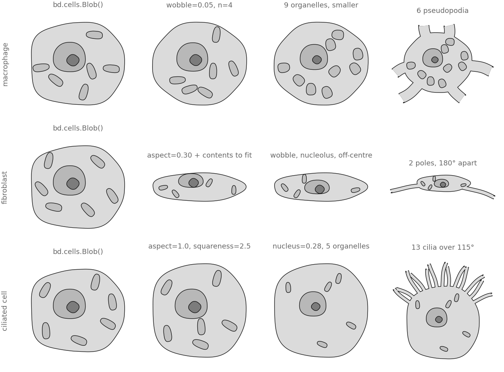
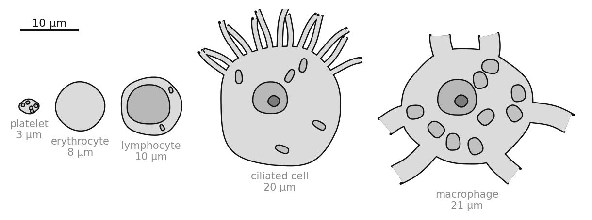

All examples Cells & tissues
Cell atlas
Twelve cells a reader can name, from one class and no new code. The unit of documentation is a variant, and this is what that buys.
cells.Blob

Every drawing here is cells.Blob with different keywords — nothing was added to the library to make it. They are cartoons keyed to what a reader recognises, not measured morphologies.
Twelve cells, one class
| what it cannot say | why |
|---|---|
| a lobed nucleus | nucleus is one ring; a neutrophil's is three or four connected lobes |
| a cell wall as a second contour | the plant cell leans on squareness=3.9 instead; a real wall is a Layer this shape does not build |
| a bud, or two bodies | a budding yeast is two joined cells, Blob is one |
| contents in part of the cytoplasm | core.scatter takes exclusion regions, Blob does not expose them |
Drawing one
import biodraw as bd
# a red cell: the anucleate case is not degenerate, it is a cell type
rbc = bd.cells.Blob(
nucleus=None, # no nucleus, and so no nucleolus either
organelles=0, # nor anything loose in the cytoplasm
aspect=1.0, # round
squareness=2.05, # very nearly a plain ellipse
wobble=0.018, # just enough that it is not an equation
seed=11,
)
# a macrophage: the same class, reaching
mac = bd.cells.Blob(
organelles=9, # a busy cytoplasm
organelle_size=0.125, # smaller, so nine of them fit
protrusions=6, # pseudopodia
protrusion_len=0.45, # x the body radius — past ~0.4 it reads as reaching
wobble=0.050, # an irregular outline
seed=2,
)
# true relative size is one number: `scale` multiplies every local length
UM_PER_UNIT = 10.0
mac = mac.moved(scale=(21.0 / UM_PER_UNIT) / (2 * mac.radius))How each one is reached

One number, true relative size

Every figure above is output, not a stored asset — the full script that draws them.